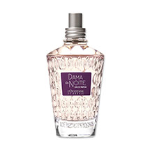
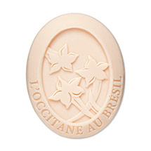
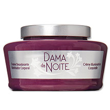

Eau de Parfum
L'Occitane au Brésil traduz o mistério da Dama da Noite neste Eau de Parfum de notas florais envoltas em especiarias que inspira sofisticação e elegância.

Sabonete perfumado
Inspirado na sofisticação da Flor Dama da Noite, este sabonete limpa e perfuma suavemente a pele.

creme desodorante iluminador corporal
Inspirado na sofisticação da Flor Dama da Noite, este desodorante corporal com uma textura aveludada deixa a pele desodorizada, hidratada, perfumada e levemente iluminada.